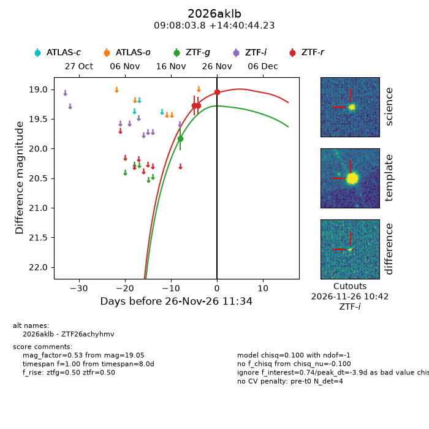
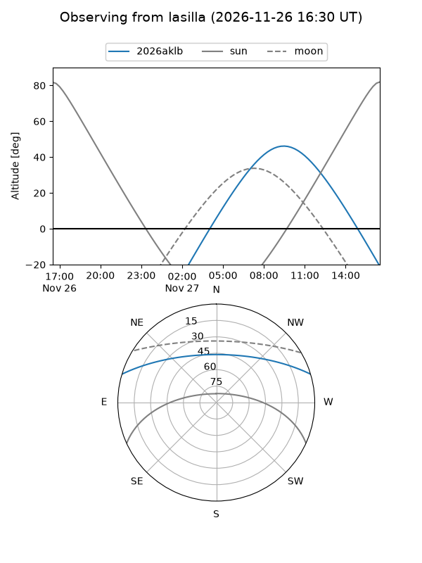
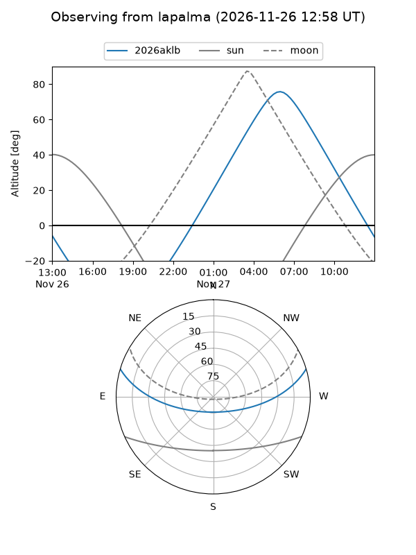
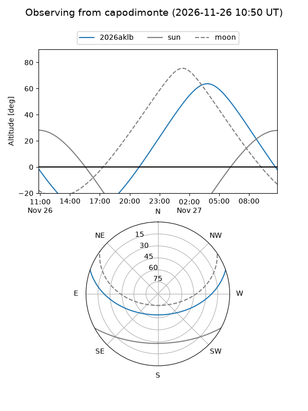
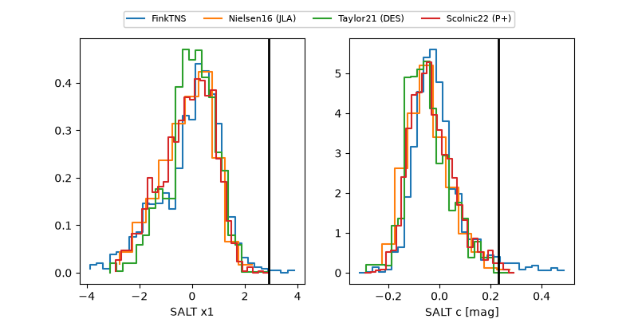

2026aklb
Target 2026aklb at 2026-11-26 11:36
Aliases and brokers:
FINK-ZTF: ztf.fink-portal.org/ZTF26achyhmv
Lasair-ZTF: lasair-ztf.lsst.ac.uk/objects/ZTF26achyhmv
ALeRCE-ZTF: alerce.online/object/ZTF26achyhmv
YSE-PZ: ziggy.ucolick.org/yse/transient_detail/2026aklb
TNS name: wis-tns.org/object/2026aklb
Direct TNS query: direct search
alt names
ZTF26achyhmv (ztf,fink_ztf)
2026aklb (tns,yse)
Coordinates:
equatorial (ra, dec) = 137.0159,+14.67895
equatorial (HMS+DMS) = 09:08:03.82,+14:40:44.23
galactic (l, b) = (214.5157,+36.79301)
Flags:
peak dt: -3.9
Photometry:
last ztfg=19.83, ztfr=19.05
1 ztfg, 3 ztfr detections
Lightcurve

Visibility



Additional plots
